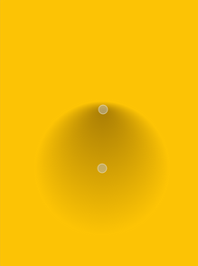

| Home · All Classes · Modules · QSS HELP · QSS 案例 · VER007 HOME |
该QRadialGradient类是用来与组合QBrush指定一个径向渐变画笔。More...
继承QGradient。
该QRadialGradient类是用来与组合QBrush指定一个径向渐变画笔。
Qt支持简单的和扩展的径向渐变。
简单的径向渐变在它周围一个圆圈一个联络点和结束点之间进行插值的色彩。扩展的径向渐变的焦点圆和圆心之间进行插值的色彩。点由两个圆限定的锥形外面将是透明的。对于简单的径向渐变的焦点调整到趴在中心圆内，而焦点可以在一个扩展的径向渐变的任何位置。
外底点的梯度可以是填充，反射或重复这取决于当前设置的spread方法：
|  |  |
 |
| PadSpread (default) | ReflectSpread | RepeatSpread |
在渐变中的颜色使用的停止点定义QGradientStop输入时，即位置和颜色。使用QGradient.setColorAt（）或QGradient.setStops（）函数定义的停止点。它是渐变的一整套停止点，描述如何渐变区域应填补。如果已指定没有停止点，黑色在0到白在1梯度使用。
除了从继承的功能QGradient，该QRadialGradient类提供了center（ ）focalPoint（）和radius（ ）函数分别返回渐变的中心，焦点和半径。
构造一个简单的径向渐变的中心和焦点在（ 0 ， 0 ）为1的半径。
构造一个简单的径向渐变与给定center，radius和focalPoint。
Note:如果给定的焦点是由确定的圆形外center点radius，它会被重新调整到趴在圆上的一个点，它与线相交的center至focalPoint。
See also QGradient.setColorAt（）和QGradient.setStops（ ） 。
构造具有给定中心的一个简单的径向渐变（cx，cy） ，radius和焦点（fx，fy） 。
Note:如果给定的焦点是由该中心确定的圆（外cx，cy）和radius它会被重新调整到线从中心到焦点和圆之间的交点。
See also QGradient.setColorAt（）和QGradient.setStops（ ） 。
构造一个简单的径向渐变与给定center，radius而在圆心的焦点。
See also QGradient.setColorAt（）和QGradient.setStops（ ） 。
构建与中心简单的径向渐变在（cx，cy性）和指定radius。的聚焦点位于该圆的中心。
See also QGradient.setColorAt（）和QGradient.setStops（ ） 。
构造一个扩展的径向渐变与给定center，centerRadius，focalPoint和focalRadius。
此功能被引入Qt的4.8 。
构造一个扩展的径向渐变与给定中心（cx，cy） ，中心半径，centerRadius，焦点， （fx，fy） ，和焦半径focalRadius。
此功能被引入Qt的4.8 。
返回此径向渐变的逻辑坐标的中心。
See also setCenter（）和QGradient.stops（ ） 。
返回逻辑坐标此径向渐变的中心半径。
此功能被引入Qt的4.8 。
See also setCenterRadius（）和QGradient.stops（ ） 。
返回逻辑坐标此径向渐变的焦点。
See also setFocalPoint（）和QGradient.stops（ ） 。
返回逻辑坐标此径向渐变的焦点半径。
此功能被引入Qt的4.8 。
See also setFocalRadius（）和QGradient.stops（ ） 。
返回逻辑坐标此径向渐变的半径。
相当于centerRadius（ ）
See also setRadius（）和QGradient.stops（ ） 。
这个设置径向渐变的逻辑坐标的中心，center。
这个函数中引入了Qt 4.2中。
See also center（ ） 。
这是一个重载函数。
这个设置径向渐变的逻辑坐标的中心（x，y） 。
这个函数中引入了Qt 4.2中。
See also center（ ） 。
设置在逻辑坐标此径向渐变的中心半径radius
此功能被引入Qt的4.8 。
See also centerRadius（ ） 。
设置在逻辑坐标此径向渐变的焦点，以focalPoint。
这个函数中引入了Qt 4.2中。
See also focalPoint（ ） 。
这是一个重载函数。
设置在逻辑坐标此径向渐变的焦点为（x，y） 。
这个函数中引入了Qt 4.2中。
See also focalPoint（ ） 。
设置在逻辑坐标此径向渐变的焦点半径radius
此功能被引入Qt的4.8 。
See also focalRadius（ ） 。
设置在逻辑坐标此径向渐变的半径radius
相当于setCenterRadius（ ）
这个函数中引入了Qt 4.2中。
See also radius（ ） 。
| PyQt 4.10.3 for X11 | Copyright © Riverbank Computing Ltd and Nokia 2012 | Qt 4.8.5 |